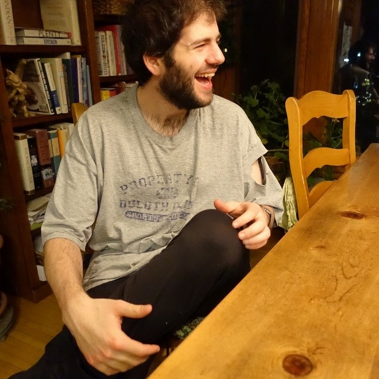

In previous chapters, we’ve said humor is an emotion. In this chapter, we’ll be looking closer at what this means. ("What does it mean to feel or experience humor?")
To do so, we'll look at humor tells. When enough humor tells occur together, they compose humor.
List of humor tells:
- activated eyes
- brightening
- energy
- expansive posture
- flushing
- higher speaking register
- informal posture
- informal movement
- laughter
- loosening
- reduction of physical tension
- relaxed posture
- smiling
- touching others
- touching self
- efforts to spread humor
- fast thinking
- fast speaking
- louder voice
- focusing on present
- high energy
- increased agency
- loss of situational awareness
- non-normative behavior
- optimism
- raised spirits
- reduction of stress
- social integration
- social seeking
- social tightening
(and so on)
“Humor” and “humor tells” are the same thing: when we feel humor, humor tells occur in clusters—when humor tells occur in clusters, we feel humor.

Above, the man brightens, smiles, has energy, informal posture, optimism, raised spirits, relaxed posture, lost situational awareness, is touching self, focusing on present, social seeking (looking at someone), and so on. These are all humor tells.
Since there are so many humor tells occurring at once, we know the man is feeling humor.
Variations. Each humor tell refers to a wide range of actions, behaviors, and decisions.
For instance, touching self might refer to someone:
- leaning forward and putting their elbows on their thighs
- leaning back and clasping their hands above their belly
- putting a hand on their forehead
- putting a hand on their chin
- crossing their arms or legs
- playing with their hair
- clapping their hands
- slapping their thigh
- covering their face
(and so on)
Since humor tells are so varied, our general list isn’t exhaustive or official—it’s just an observational starting point.